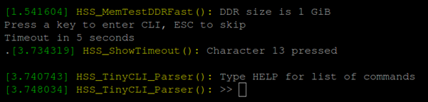

Icicle Kit Setup Instructions¶
Table of Contents
Introduction¶
These instructions describe how to update the PolarFire SoC Icicle Kit Linux image and FPGA bitstream necessary to support the SmartHLS SoC Features.
The instructions are a simplified version of Updating PolarFire SoC Icicle-Kit FPGA Design and Linux Image. The SmartHLS PolarFire SoC feature uses the PolarFire SoC Icicle Kit Reference Design (v2023.02) as the base project, and the Linux image for the PolarFire SoC Icicle Kit Reference Design: PolarFire SoC Yocto Board Support Package (v2023.02.1) .
PolarFire® SoC Icicle Kit Diagram¶
For the following setup instructions, please refer to the labelled diagram of a PolarFire SoC Icicle Kit below:
Step 1: Setup Required Board Connections¶
Warning
Micro USB sockets on the Icicle board are very fragile and can easily break. Be careful when plugging/unplugging the micro USB cables. Also micro USB cables can occasionally fail, so try another cable.
The following cables must be connected to the Icicle Kit for use with SmartHLS:
Power cable (connects to
12V Power Supply Input).Micro USB for transferring the image to the board (one end connects to
USB OTG, while the other end connects to the host PC that will transfer the image).This cable is used to expose the internal eMMC memory as a USB storage
Required only if the Linux image needs to be updated
Micro USB for serial communication to the board (one end connects to
USB - UART Terminal, while the other end connects to the host PC).This cable is used to open a serial communication terminal between the Linux system on the board and the host PC.
Required only if serial communication is required (for Linux image transfer or determining the board’s network IP address).
FlashPro6 programmer, embedded or external, connected to the host PC.
For an embedded programmer, connect a micro USB cable to
USB Embedded Programming Connector, and make sure that jumpers J9 and J24 are closed.For an external programmer, connect it to
JTAG Programming Header, and make sure that jumpers J9 is open.
Ethernet cable, one end connected to
GEM1, and the other end connected either directly to the PC, or to the same network as the host PC (for example, the same router). Tip: On Dell laptops to enable both ethernet and wifi at the same time you may have to modify your bios settings.
Step 2: Check Jumper Settings¶
The following jumpers must be set on the board:
Jumper |
Setting |
|---|---|
|
Open for external FlashPro6, Closed for embedded FlashPro6 |
|
Closed for embedded FlashPro6 |
|
Closed |
|
Closed (Right two pins) |
|
Closed (2P5V setting / bottom two pins) |
|
Closed (Right two pins) |
|
Closed (1V setting / bottom two pins) |
|
Closed |
All other jumpers |
Open |
Step 3: Install Host PC Applications¶
The following programs are required to be installed on the host PC to set up the Icicle Kit:
Step 4: Open 3 Terminals¶
During the setup we will open the 3 terminals labeled below:
Host PC Terminal: We will use theddcommand to flash the Linux image from the Host PC to the Board.HSS Serial Terminal: We will use the HSS command-line interface to expose the eMMC flash memory as a USB storage device.Linux Serial Terminal: We will use this serial terminal to interact with Linux running on the board.
Host PC Terminal¶
On Linux, to open the Host PC Terminal, users should open a standard terminal.
On Windows, to open the Host PC Terminal, users should open Cygwin that is shipped with SmartHLS. Open File Explorer,
then navigate to the SmartHLS installation directory: <SMARTHLS_INSTALLATION_DIR>/cygwin64/.
Then right-click on Cygwin.bat and choose “Run as administrator”. Administrator rights are required to flash the Linux image to the board.
Cygwin tip: Users can access their file directory on their computer by using /cygdrive/<drive letter>/<path>
as the prefix. For example, to go to C:\Microchip\SmartHLS-2023.2, enter cd /cygdrive/c/Microchip/SmartHLS-2023.2.
HSS Serial Terminal¶
Make sure the board is powered on and the board’s USB - UART Terminal connection is made as described in Step 1: Setup Required Board Connections.
On Windows, To open the HSS Serial Terminal:
Open Start -> Device Manager. Select View -> Show hidden devices. Under Ports (COM & LPT), and look for “Silicon Labs Quad CP2108 USB to UART Bridge: Interface 0” as shown below. Take note of the serial line number in parenthesis. In this case, Interface 0 is COM3. The digit could be different on your machine.
Troubleshooting the serial connection to the board:
If you can’t find the serial port with the correct name, you may have to install CP210x Windows Drivers from SiLabs.
You should be able to see the UART interfaces in Start -> Device Manager. If you can’t, try selecting View -> Show hidden devices,
If you still can’t see the serial ports, then your USB socket could be broken, which is usually indicated if Windows makes no sound when disconnecting/reconnecting the USB cable.
With the Icicle Kit on and connected, open a new PuTTY terminal. Change the settings on the left navigation panel, under Connection->Serial to:
Serial line to connect to: <Serial line number>
Baud Rate: 115200
Data Bits: 8
Stop Bits: 1
Parity: None
Flow Control: None
Below is an image of how the settings look in PuTTY:
Then go back to Session on the left navigation panel, Change Connection Type to Serial as shown below, then click Open:

On Linux, to open the HSS Serial Terminal:
The UART channel that we will connect to is channel 0. To do this in GTKTerm, the command is:
sudo gtkterm -p /dev/ttyUSB0 -s 1200Note that if you have other ttyUSB devices connected to your host PC, the number after
/dev/ttyUSbmay need to change. To out find which devices are associated with the Icicle Kit’s UART channels, you can runls /dev/ttyUSB*with and without the USB cable connected to the board. Any new devices (there should be four) that appear when plugging in the board are the UART channels. For this step, we want to use the/dev/ttyUSBdevice with the lowest number.
Linux Serial Terminal¶
To open the Linux Serial Terminal follow the same instructions as the previous HSS Serial Terminal section.
Except this time use interface 1 (/dev/ttyUSB1 on Linux, and Interface 1 on Windows).
In the example below, Interface 1 is on the COM4 serial line.
Step 5: Flashing the Linux Image to the Board¶
A Linux image is tightly related to the SoC hardware design it was compiled for. SmartHLS uses the Microchip Linux image - 2023.02.1 release, which is meant to be used with the Icicle Kit Reference Design - 2023.02 release and may not be the same as the image that the Icicle Kit board has been flashed with from the factory, or any other image currently loaded in your board. If you have your own Linux image and your own Libero SoC project then see the User-defined SmartDesigns section.
To program this Linux image to the board, follow these instructions:
Download the Linux image core-image-minimal-dev-icicle-kit-es-20230328094718.rootfs.wic.gz and its associated core-image-minimal-dev-icicle-kit-es-20230328094718.rootfs.wic.bmap file file. Then verify their checksum.
$> wget https://github.com/polarfire-soc/meta-polarfire-soc-yocto-bsp/releases/download/v2023.02.1/core-image-minimal-dev-icicle-kit-es-20230328094718.rootfs.wic.gz
$> wget https://github.com/polarfire-soc/meta-polarfire-soc-yocto-bsp/releases/download/v2023.02.1/core-image-minimal-dev-icicle-kit-es-20230328094718.rootfs.wic.bmap
$> sha256sum core-image-minimal-dev-icicle-kit-es.wic.*
58fdce37eb4e3f63cb8e6aa0569d5a5a47fcb67352e6548dc659a082e8ad6a76 core-image-minimal-dev-icicle-kit-es-20230328094718.rootfs.wic.bmap
4a1406ba9e764a94026fcea2ee8fbb84f91384e953e7ba6176fcb7dadcbc5522 core-image-minimal-dev-icicle-kit-es-20230328094718.rootfs.wic.gz
...
In the
Host PC Terminal, enter the commandls /dev/sd*, and take note of what appears. This will be used in a later step to help determine the device name of the eMMC flash memory.
In our example, we have /dev/sda and /dev/sdc already:
Expose Board’s eMMC Flash Memory to Host PC as USB flash storage¶
To flash the Linux image we first need to expose the eMMC flash memory as a USB storage device to the host PC. Make sure the board’s USB OTG connection is made as described in Step 1: Setup Required Board Connections.
Reset the Icicle Kit by pressing pushbutton SW4 (top left pushbutton). In the
HSS Serial terminal, when prompted toPress a key to enter CLI, press any key aside fromESC. If you don’t press a key within 1 second then the board will continue to boot Linux and you will have to reset the board again. Double check in theLinux Serial Terminalto verify that you don’t see any output from Linux booting.

You should now see a prompt for the HSS command-line interface:
In the
HSS Serial Terminal, enter the commandmmcto select the eMMC flash memory (only needed for newer HSS versions). Then enter the commandusbdmsc.

Troubleshooting
usbdmsccommand:If you see “FLASH_DRIVE_init() returned false” (below), then you forgot to run the
mmccommand before runningusbdmsc

If the board is properly connected to your host computer, you should see data being read as shown on the last line of the image below:

On the host PC, in Windows File Explorer -> This PC, you should also be able to see the Icicle Kit’s eMMC flash memory as a media drive. In this case, shown as “boot (D:)”:
Flash the Linux Image to the Board¶
In the
Host PC Terminal, runls /dev/sd*again, and compare to what we saw in the earlier step. Note which new device shows up. In our example,/dev/sdaand/dev/sdcwere present before, but/dev/sdbis new. Therefore, the eMMC flash memory on the board is represented on our host machine as:/dev/sdb. We can now flash the Linux image to the board.
lshw command and it will show the device for the PolarFireSoC:$> sudo lshw -class disk -short
H/W path Device Class Description
==============================================================
/0/100/14/0/6/0.0.0 /dev/sdb disk 7820MB PolarFireSoC_msd
/0/100/14/0/6/0.0.0/0 /dev/sdb disk 7820MB
/0/1/0.0.0 /dev/sda disk 1TB Samsung SSD 860
On Windows, in the Host PC Terminal you can also run the command cat /proc/partitions and verify that the device name (sdb) “win-mounts” column matches the drive names shown in the Windows File Explorer (D:\):
In the
Host PC Terminal, enter the following commands, where/dev/sdxis the device you found the Icicle Kit to be attached to (in our example it would be/dev/sdb), and<linux image>.wic.gzis the Linux image file you downloaded:
For Linux (option 1): Using bmaptool is the recommended option because it is fast.
$> bmaptool copy <linux image>.wic.gz /dev/sdb
For Linux (option 2): Using dd.
Warning
Be extremely careful that you run the dd command on the correct device. Otherwise you could permanently corrupt another hard disk and lose data.
sudo umount /dev/sdx?
zcat <linux image>.wic.gz | sudo dd of=/dev/sdx bs=4096 iflag=fullblock oflag=direct conv=fsync status=progress
- For Windows:
Run this command in Cygwin:
zcat <linux image>.wic.gz | dd of=/dev/sdx bs=4096 iflag=fullblock oflag=direct conv=fsync status=progressIf you get a permission denied error then you forgot to run Cygwin as an administrator. Launch Cygwin again.
Note that dd flashing command should take several minutes to complete.
DO NOT power cycle the Icicle board at this point.
After the flashing command completes, you should disconnect the mounted drive, by typing Ctrl+C in the HSS Serial Terminal. The Linux image on the board is now updated.
Step 6: Programming the FPGA bitstream with FPExpress¶
After programming the Linux image for the first time, in order to boot the board, you’ll also have to program a matching bitstream to the FPGA. SmartHLS comes with a default bitstream that can be used to boot the board, which can be programmed using the following steps:
Open FPExpress:
On Windows, the program can be found by opening the Start Menu, then scrolling down the list of programs until you see the
Microchip Libero SoC v2023.2folder (under theMletter) ->FPExpress.On Linux, you can navigate to the
bindirectory in your Libero installation, and thensudo ./fp6_env_install, then open FPExpress with the command./FPExpress.
Click
New..., selectImport FlashPro Express job file, and navigate to your SmartHLS installation to select the job file:<SMARTHLS_INSTALLATION_DIR>\SmartHLS\boards\iciclekit\MPFS_ICICLE_BASE_DESIGN_2023_02.job. For example:C:\Microchip\SmartHLS-2023.2\SmartHLS\boards\iciclekit\MPFS_ICICLE_BASE_DESIGN_2023_02.job. Then choose a temporary path for the FPExpress project location.

Select which programmer you wish to use (if you have multiple), and note down the programmer ID (highlighted in a red box in the picture below). From the drop-down box above the
RUNbutton make sure thatPROGRAMis selected.
Now press the
RUNbutton, and you should see a confirmation that the programming passed:
This will program a default bitstream to the FPGA fabric, as well as a compatible bootloader (HSS), which will allow the board to boot up with the newly added Linux image.
Programming the bitstream will automatically reset the board. Do NOT power cycle.
Step 7: Accessing Linux on Board and Determining the IP Address¶
In the
Linux Serial Terminal, after Linux boots you should see a login screen:

The login is root, and no password is required. After logging in, you should be able to see a terminal.
Troubleshooting if Linux does not boot:
If you see an error message when booting Linux there could have been a problem/corruption when writing the Linux image to the board. Please repeat the steps in Step 5: Flashing the Linux Image to the Board and try again.
Also check the serial terminal output from the other UART Interface 0 and if you see “boot image failed CRC” as shown below. This error means there is a mismatch between your FPGA job file (which writes the HSS bootloader) and the Linux image. Double check that you used the exact files specified in this document. The Linux image will only boot with a compatible FPGA job file.

2. Make sure the ethernet cable is connected as described in Step 1: Setup Required Board Connections.
Now enter ifconfig eth0, and take note of the IP address that should have been assigned to the Icicle Kit by the network:
root@icicle-kit-es:~# ifconfig eth0
eth0: flags=4163<UP,BROADCAST,RUNNING,MULTICAST> mtu 1500
inet 192.168.0.173 netmask 255.255.255.0 broadcast 192.168.0.255
inet6 fe80::204:a3ff:fefb:406f prefixlen 64 scopeid 0x20<link>
ether 00:04:a3:fb:40:6f txqueuelen 1000 (Ethernet)
RX packets 17882 bytes 3231759 (3.0 MiB)
RX errors 0 dropped 4843 overruns 0 frame 0
TX packets 4963 bytes 1478718 (1.4 MiB)
TX errors 0 dropped 0 overruns 0 carrier 0 collisions 0
device interrupt 18
$> vim /etc/systemd/network/70-static-eth0.network
[Match]
Name=eth0
[Network]
Address=192.168.0.173/24
Gateway=192.168.0.161
DCHP=no
Save the file and restart the network and confirm the status:
$> systemctl restart systemd-networkd
$> networkctl status
* State: routable
Online state: online
Address: 192.168.0.173 on eth0
fe80::204:a3ff:fefb:406f on eth0
fe80::204:a3ff:fefb:406e on eth1
Gateway: 192.168.0.161 on eth0
Now you should be able to ping and ssh into the board.
Step 8: Accessing Linux over network using SSH¶
Now that the IP address of the board was determined in the previous step, you can access the board remotely over the network using SSH from your Host PC Terminal with the command:
ssh root@[your board IP here]
For the example above, you would run ssh root@192.168.0.173.
Note
SmartHLS uses SSH to access and run programs on the Icicle Kit as well, so all SmartHLS projects will need to specify the BOARD_IP.
In addition, if you have multiple connected programmers and only want to program a specific one, you need to specify the PROGRAMMER_ID.
By default, all connected programmers are programmed.
For SmartHLS IDE projects, this can be done by adding BOARD_IP=[your board IP here] and PROGRAMMER_ID=[your FlashPro ID here] to the project’s Makefile.user.
For command line projects, this can be done by adding the same to the Makefile (or makefile), or exporting environment variables: export BOARD_IP=[your board IP here] and export PROGRAMMER_ID=[your FlashPro ID here].